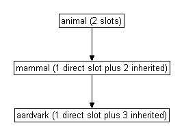
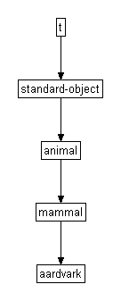
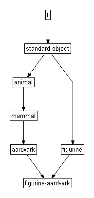
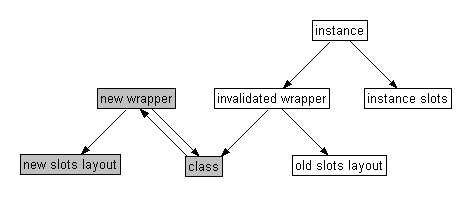
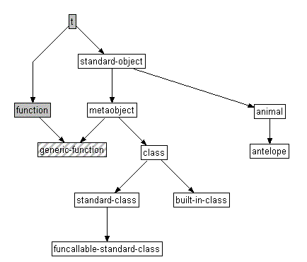

CLOS (the Common Lisp Object System)¶
`1. Introduction <>`__¶
This document was written for presentation during a tutorial session at the International Lisp Conference held in New York City in October 2003.
The intended audience for the tutorial is anybody with a basic knowledge of lisp or scheme, who wants to know something about how to use the “Common Lisp Object System” (CLOS). However, in an attempt to provide something for everyone, the tutorial will cover:
- an introduction to the 10% of CLOS which you need to get you through 90% of use cases;
- a number of opinionated statements, for instance about the differences between CLOS and other object systems;
- a brief look “under the hood” at how some of the more dynamic features of CLOS might be implemented;
- some exercises.
The author worked on the LispWorks project at Harlequin for ten years. Since then he has taught lisp to undergraduates, written an open-source search engine, and taken up the stress-free existence of a software consultant.
The examples in this tutorial are available in a separate file examples.lisp. I hope to use the code in present.lisp to squirt them into a lisp listener during the tutorial.
This document is not confidential. It is available on the web, at http://www.ravenbrook.com/doc/2003/07/15/clos-fundamentals/.
`2. Background <>`__¶
CLOS (either one syllable rhyming with “dross”, or two syllables as in “see-loss”) is the “Common Lisp Object System”. The functionality belonging to this name was added to the Common Lisp language between the publication of Steele’s first edition of “Common Lisp, the Language” in 1984 and the formalization of the language as an ANSI standard ten years later.
The source material for CLOS was a report written in three chapters. The first two, consisting of “Programmer Interface Concepts” and “Functions in the Programmer Interface”, will now be found as the two halves of chapter 28 in [Steele 1990] and were the basis for relevant parts of the ANSI specification when it later appeared. The third chapter, on the Metaobject protocol, was regarded (by its authors, I believe) as incomplete and never published.
This tutorial is also incomplete, but in a different sense: I have
deliberately omitted as much as I could. CLOS offers many alternate
styles of working, as well as - in some considerable detail - a number
of opportunities for applications to extend and reconfigure CLOS itself.
(Some of this detail will be covered in the following tutorial, on the
“Metaobject Protocol”.) The intention of this tutorial is to provide a
sufficient grounding in the (say) 10% of CLOS which covers 90% of use
cases - enough to get a novice off the ground. We will access this 10%
by examining in some (but not full!) detail two defining macros:
`defclass <#section-3>`__ and `defmethod <#section-4>`__.
As to what an object system is: I can only say that by the end of this tutorial you should have some idea of what CLOS has to offer. (Is it just a collection of 33 functions, 8 macros and some interesting new types? Or is it something more profound?) Historically, and implementationally, all the concepts here are strongly related. However, when you come to use them yourself you’ll find that in an application the relation is not so strong, and you can pick and choose what’s useful to you and leave alone what isn’t.
`2.1. References <>`__¶
These are listed in appendix A at the end of this document. [Keene 1989] is a very easy introduction and more thorough than the single chapter in [Graham 1995], but it will obviously take you longer to read. [Steele 1990, otherwise known as “CLtl2”] is a handy reference guide, but do take a little care because it predates the ANSI specification - for which see the “hyperspec” [Pitman 1996] - and differs in some important respects (for a list of which see the end of appendix C in [Graham 1995). A (note: not “the”) metaobject protocol, described in [Kiczales et al 1991, otherwise known as “AMOP”], gives many hints about configuration and implementation.
`2.2. Getting started <>`__¶
Theoretically this should not be an issue in any fully enabled Common
Lisp, because CLOS is part of the language. However, some
implementations might expect you to (require "clos") or similar.
Check your manual.
Most of the examples in this tutorial should work fine in any package
which “uses” COMMON-LISP, and they should port to any conforming
implementation. The exceptions are marked as such. I have tested the
examples in LispWorks (version 4.2.7, used to generate all the examples
below) and Allegro CL (version 6.2).
`3. Classes and instances <>`__¶
`3.1. Review - the non-OO approach <>`__¶
Before we introduce the first of our two defining macros, let’s review
its non object-oriented equivalent: defstruct. The language provides
you with a number of specialized data types (cons, string,
hash-table, etc.) along with this mechanism for defining your own
structures. An example:
(defstruct point x y z)
The form is roughly equivalent to a struct declaration in C. It defines
a new type, called point, with three slots (or fields if that’s a
word you’re happier with) called x, y and z.
Compactly, the above invocation of defstruct gives us all of the
following:
- A constructor function
make-point, which takes keyword arguments:x:yand:z(all defaulting tonilif not supplied). Every time you call this function a newpointis allocated and returned. - Any object returned by
make-pointwill be of typepoint, and will respond enthusiastically to the predicatepoint-p. - Setfable accessors
point-x,point-yandpoint-zcan be used to read and modify the slots of anypointobject. - A shallow copier,
copy-point.
Structures can have any number of slots, from zero up (to some implementation-defined limit, e.g. 254 in LispWorks for Windows) and - as with lists and general vectors - the slots can hold any values.
In this example, note the form in which structures are printed by default, and which can be parsed by the lisp reader.
CL-USER 1 > (defstruct point x y z) POINT CL-USER 2 > (defun distance-from-origin (point) (let* ((x (point-x point)) (y (point-y point)) (z (point-z point))) (sqrt (+ (* x x) (* y y) (* z z))))) DISTANCE-FROM-ORIGIN CL-USER 3 > (defun reflect-in-y-axis (point) (setf (point-y point) (- (point-y point)))) REFLECT-IN-Y-AXIS CL-USER 4 > (setf my-point (make-point :x 3 :y 4 :z 12)) #S(POINT X 3 Y 4 Z 12) CL-USER 5 > (type-of my-point) POINT CL-USER 6 > (distance-from-origin my-point) 13.0 CL-USER 7 > (reflect-in-y-axis my-point) -4 CL-USER 8 > my-point #S(POINT X 3 Y -4 Z 12) CL-USER 9 > (setf a-similar-point #s(point :x 3 :y -4 :z 12)) #S(POINT X 3 Y -4 Z 12) CL-USER 10 > (equal my-point a-similar-point) NIL CL-USER 11 > (equalp my-point a-similar-point) T CL-USER 12 >
Note that defstruct has a number of options (which we won’t
cover here), for describing inheritance, printing behaviour, slot types
and defaults, and so on.
3.2. Introducing the macro ``defclass` <>`__¶
The macro used for defining new data types in CLOS is defclass. An
example:
(defclass point () (x y z))
Note but ignore the empty parentheses for now. Note also the
parentheses around the set of slot names (unlike defstruct). The
above invocation gives us the following (and no more):
- A CLOS type (or class) named
point. - Three slots in this class, again named
x,yandz.
Note that - unlike defstruct above - defclass gives us none
of the following: constructor, predicate, accessors (unless we ask for
them explicitly - see section 3.5 below), copier,
#s print / read syntax. You can generate similar
functionality in CLOS, but it doesn’t come automatically the way it did
with structures. Quite often, you’ll find that you don’t need the power
of CLOS and that defstruct is more than enough to meet your needs,
not to mention being more convenient. When I’m writing an application, I
typically start by defining my types with defstruct, and only change
them to defclass when it becomes necessary to do so.
Note next that if a type has previously been defined as a structure,
then you can’t redefine it as a class. (On the other hand, “the
consequences of redefining a defstruct structure are undefined” so we
shouldn’t feel we’re losing out.) We’ll sneak around that in this
session by uninterning the name of the old type:
CL-USER 12 > (unintern 'point) T CL-USER 13 > (defclass point () (x y z)) #<STANDARD-CLASS POINT 2060C12C> CL-USER 14 > (setf my-point (make-instance 'point)) #<POINT 205FA53C> CL-USER 15 > (type-of my-point) POINT CL-USER 16 > (defun set-point-values (point x y z) (setf (slot-value point 'x) x (slot-value point 'y) y (slot-value point 'z) z)) SET-POINT-VALUES CL-USER 17 > (set-point-values my-point 3 4 12) 12 CL-USER 18 > (defun distance-from-origin (point) (with-slots (x y z) point (sqrt (+ (* x x) (* y y) (* z z))))) DISTANCE-FROM-ORIGIN CL-USER 19 > (distance-from-origin my-point) 13.0 CL-USER 20 >
Note the following:
- The use of
make-instanceto allocate an instance of our new class. - The “unreadable” printed representation of
my-pointin line 14. - The setfable function
slot-valueused to access values in an instance’s slots. - The macro
with-slots, for abbreviating calls toslot-value. The first argument is a list of slot names. The second argument evaluates to a CLOS instance; this is followed by optional declarations and an implicitprogn. Lexically during the evaluation of the body, an access to any of these names as a variable is equivalent to accessing the corresponding slot of the CLOS instance.
Exercise: Rewrite set-point-values using with-slots.
Exercise: Use symbol-macrolet to implement with-slots. Note
that each name listed in the first argument to symbol-macrolet can
be replaced by the pair (variable-name slot-name).
Exercise: Write a macro defclass-plus which expands into a
defclass plus some or all of the following, in the spirit of
defstruct: constructor, predicate, accessors and copier. This may
get tedious, in which case convince yourself that you know what you’re
doing and then stop.
`3.3. Classes are instances too <>`__¶
Compare the values returned from the example calls to defstruct
(line 1 above) and defclass (line 13). The former doesn’t return
anything useful, but the latter has returned a lisp object of some sort:
#<STANDARD-CLASS POINT 275B78DC>. This object is the class named
point. It’s a first class object within lisp: an embodiment of a
CLOS type. In fact it can be passed as the type argument to typep
and subtypep. It’s also a CLOS object, which means it must be an
instance of a CLOS class, and we can find out what that class is, as in
the example below.
CL-USER 20 > (find-class 'point) #<STANDARD-CLASS POINT 275B78DC> CL-USER 21 > (class-name (find-class 'point)) POINT CL-USER 22 > (class-of my-point) #<STANDARD-CLASS POINT 275B78DC> CL-USER 23 > (typep my-point (class-of my-point)) T CL-USER 24 > (class-of (class-of my-point)) #<STANDARD-CLASS STANDARD-CLASS 20306534> CL-USER 25 >
The last of these looks a little scary at first. The object my-point
is an instance of the class named point; the class named point
is itself an instance of the class named standard-class. We say that
the class named standard-class is the metaclass (i.e. the class of
the class) of my-point.
Notation: describing something as “the class named
standard-class” may be correct but it doesn’t make for elegant
reading. When we refer to “the class standard-class” or even to
standard-class, we generally mean the class named by that symbol.
`3.4. You don’t need CLOS objects to use CLOS <>`__¶
Generously, the functions introduced in the last section also work on lisp objects which are not CLOS instances:
CL-USER 25 > (let ((the-symbol-class (find-class 'symbol))) (values the-symbol-class (class-name the-symbol-class) (eq the-symbol-class (class-of 'symbol)) (class-of the-symbol-class))) #<BUILT-IN-CLASS SYMBOL 20306474> SYMBOL T #<STANDARD-CLASS BUILT-IN-CLASS 20306414> CL-USER 26 >
Postponing to section 4.5 the question of why this
might be useful to us, we see here that lisp symbols are instances
of the system class symbol. This is one of 75 cases in which the
language requires a class to exist with the same name as the
corresponding lisp type. Many of these cases are concerned with CLOS
itself (for example, the correspondence between the type
standard-class and the CLOS class of that name) or with the
condition system (which might or might not be built using CLOS classes
in any given implementation). However, 33 correspondences remain
relating to “traditional” lisp types:
arrayhash-tablereadtablebit-vectorintegerrealbroadcast-streamlistsequencecharacterlogical-pathnamestreamcomplexnullstringconcatenated-streamnumberstring-streamconspackagesymbolecho-streampathnamesynonym-streamfile-streamrandom-statetfloatratiotwo-way-streamfunctionrationalvector
Note that not all “traditional” lisp types are included in this
list. (Consider: atom, fixnum, short-float, and any type not
denoted by a symbol.)
The presence of t is interesting. Just as every lisp object is of
type t, every lisp object is also a member of the class named t.
This is a simple example of membership of more then one class at a time,
and it brings into question the issue of inheritance, which we will
consider in some detail later (section 3.6).
CL-USER 26 > (find-class t) #<BUILT-IN-CLASS T 20305AEC> CL-USER 27 >
In addition to classes corresponding to lisp types, there is also a CLOS class for every structure type you define:
CL-USER 27 > (defstruct foo) FOO CL-USER 28 > (class-of (make-foo)) #<STRUCTURE-CLASS FOO 21DE8714> CL-USER 29 >
The metaclass of a structure-object is the class
structure-class. It is implementation-dependent whether the
metaclass of a “traditional” lisp object is standard-class (as in
section 3.3), structure-class, or
built-in-class. Restrictions:
built-in-class |
May not use make-instance, may not use slot-value, may not use defclass to modify, may not create subclasses. |
structure-class |
May not use make-instance, might work with slot-value (implementation-dependent). Use defstruct to subclass application structure types. Consequences of modifying an existing structure-class are undefined: full recompilation may be necessary. |
standard-class |
None of these restrictions. |
`3.5. Slots <>`__¶
The full syntax for defclass is:
defclassclass-name ({superclass-name}*) ({slot-specifier}*) [[class-option]]
We’ll discuss the second argument in section 3.6 below. Class-options are outside the scope of this tutorial. In this section, we’ll take a look at the slot-specifiers.
In the class definition of point above, each slot was specified
simply by its name. We can instead specify a slot thus:
(slot-name [[slot-option]])
Each slot-option consists of a keyword followed by a value. Among the
keywords available are the following; you can specify as many or few as
you need. Three of these keywords (:accessor, :reader and
:initarg) may appear more than once for each slot, if you like.
:accessor |
Defines methods (see section
4 below, think of
them as functions for the time
being), named by the given value,
for reading and modifying the slot.
For example,
|
:reader |
Defines a single method for reading
the slot; a read-only counterpart to
:accessors. |
:initarg |
Specifies a keyword which can be
used to pass an initial value for
this slot to make-instance (an
initialization argument). |
:initform |
Specifies a default value for this
slot, to be used if no initial value
was specified explicitly. This form
is evaluated each time it’s needed,
in the lexical environment of the
defclass. |
:allocation |
Specifies whether the value of this slot:
|
In the following example, note the following:
the specification and use of the
:xinitialization argument for the slotx;the default value for the slot
y;how changing the value of the class slot
z- but not the local slots - affects all instances of the class (whether or not those instances exist yet);the stylistic difference in line 33 between using an accessor (
daft-y) andslot-value.CL-USER 29 > (defclass daft-point () ((x :accessor daft-x :initarg :x) (y :accessor daft-y :initform 3.14159) (z :reader daft-z :allocation :class))) #<STANDARD-CLASS DAFT-POINT 21DF867C> CL-USER 30 > (setf (slot-value (make-instance 'daft-point) 'z) 42) 42 CL-USER 31 > (setf my-daft-point (make-instance 'daft-point :x 19)) #<DAFT-POINT 205F264C> CL-USER 32 > (list (daft-x my-daft-point) (daft-y my-daft-point) (daft-z my-daft-point)) (19 3.14159 42) CL-USER 33 > (let ((temp (make-instance 'daft-point))) (setf (daft-y temp) 999 (slot-value temp 'z) 0)) 0 CL-USER 34 > (list (daft-x my-daft-point) (daft-y my-daft-point) (daft-z my-daft-point)) (19 3.14159 0) CL-USER 35 >
Exercise: Find a defstruct form and “port to CLOS” one of its
slot options (or more if they’re interesting).
`3.6. Subclasses and inheritance <>`__¶
Suppose we want two classes to share behaviour, in the sense that one of them (the subclass) is defined in terms of the other (the superclass). This leads us to the notion of inheritance, common in some form to all object systems.
For example:
CL-USER 35 > (defclass animal () ((legs :reader leg-count :initarg :legs) (comes-from :reader comes-from :initarg :comes-from))) #<STANDARD-CLASS ANIMAL 2150BA0C> CL-USER 36 > (defclass mammal (animal) ((diet :initform 'antelopes :initarg :diet))) #<STANDARD-CLASS MAMMAL 2150A894> CL-USER 37 > (defclass aardvark (mammal) ((cute-p :accessor cute-p :initform nil))) #<STANDARD-CLASS AARDVARK 2150A5D4> CL-USER 38 >
In this example, mammal is defined (by line 36) to be a subclass of
animal. This means that every instance of mammal is also an
instance of animal. If we (make-instance 'mammal), we get an
object with three slots: diet which comes directly from the
definition of mammal, plus legs and comes-from which are
both inherited from the definition of animal.
Similarly, every aardvark is both a mammal and an animal,
and has four slots, three of which are inherited from superclasses.
Note that the subclass relationship is transitive - aardvark is
an (indirect) subclass of animal, via mammal. Therefore you do
not need to explicitly list animal as a superclass of aardvark.

Figure 1. ``Aardvark` is a subclass of mammal which is a subclass
of animal <>`__. The arrows denote the superclass relationship.
In CLOS, these relationships can be queried by the readers
class-direct-superclasses and class-precedence-list.
(Implementation note: these two functions are not part of Common
Lisp. In LispWorks they’re available via your default
package-use-list, in Allegro they’re exported from ACLMOP. Also
in Allegro, you have to have made an instance of aardvark before you
can interrogate its precedence list.)
CL-USER 38 > (class-direct-superclasses (find-class 'aardvark)) (#<STANDARD-CLASS MAMMAL 2150A894>) CL-USER 39 > (class-precedence-list (find-class 'aardvark)) (#<STANDARD-CLASS AARDVARK 2150A5D4> #<STANDARD-CLASS MAMMAL 2150A894> #<STANDARD-CLASS ANIMAL 2150BA0C> #<STANDARD-CLASS STANDARD-OBJECT 20305B4C> #<BUILT-IN-CLASS T 20305AEC>) CL-USER 40 >
The class-precedence-list of a class is a list which starts from
that class and recursively shows superclasses, in order. The first three
elements in the above list come as no surprise but the other two merit
brief discussion.
- All CLOS objects (anything allocated by calling
make-instance) are instances of the system classstandard-object. In other words, all instances ofstandard-classes inherit fromstandard-object. You do not ever have to liststandard-objectas a superclass because it’s there implicitly.(defclass foo () ())and(defclass foo (standard-object) ())are the same. - All classes are subclasses of the class named
t, which we introduced in section 3.4 above.
 Figure 2. Class precedence for ``aardvark` <>`__
Now consider this:
CL-USER 40 > (defclass figurine () ((potter :accessor made-by :initarg :made-by) (comes-from :initarg :made-in))) #<STANDARD-CLASS FIGURINE 205FBD1C> CL-USER 41 > (defclass figurine-aardvark (aardvark figurine) ((name :reader aardvark-name :initarg :aardvark-name) (diet :initform nil))) #<STANDARD-CLASS FIGURINE-AARDVARK 205FF354> CL-USER 42 >
The class figurine-aardvark here inherits its behaviour from two
direct superclasses. Any instance of this class will therefore also be
an instance of each of these two classes, and of all their superclasses.
 Figure 3. ``Figurine-aardvark` inherits from two direct superclasses <>`__
This is called multiple inheritance. It’s a terribly useful feature of
CLOS. Not all OO systems support it. For example, consider
implements in Java, where you can have full inheritance from no more
than one superclass and a highly restricted form of inheritance from any
others. Multiple inheritance in CLOS is symmetric between as many
superclasses as you want to specify. Ensure that the OO system you’re
using supports full multiple inheritance.
Note that, because every CLOS class inherits from
standard-object, a feature of multiple inheritance is the presence
of “loops” in the class inheritance diagram. Calculating the precedence
list is no longer straightforward (look up topological sorting), but
it’s worth knowing that the result has to be compatible with (a) the
order of explicitly named superclasses and (b) the class precedence
lists of all superclasses.
CL-USER 42 > (class-precedence-list (find-class 'figurine-aardvark)) (#<STANDARD-CLASS FIGURINE-AARDVARK 2150938C> #<STANDARD-CLASS AARDVARK 2150A5D4> #<STANDARD-CLASS MAMMAL 2150A894> #<STANDARD-CLASS ANIMAL 2150BA0C> #<STANDARD-CLASS FIGURINE 2150A06C> #<STANDARD-CLASS STANDARD-OBJECT 20305B4C> #<BUILT-IN-CLASS T 20305AEC>) CL-USER 43 >
Let’s now turn to look at the slots of figurine-aardvark:
legs- inherited fromanimal;comes-from- inherited fromanimalandfigurine;diet- inherited frommammal, also a direct slot infigurine-aardvark;cute-p- inherited fromaardvark;potter- inherited fromfigurine;name- direct slot infigurine-aardvark.
What happens if a slot with some given name appears more than once in the precedence list? The answer is that the subclass ends up with only one slot of that name, and that slot’s properties are a combination of the properties of the slots which it inherited. The rules for combining each option are as follows:
:accessorand:reader- the union of accessors / readers from all the inherited slots; see section 4 below for the sense in which this works if names are repeated.:initarg- the union of initialization arguments from all the inherited slots. For example, the valid:initargs for thecomes-fromslot infigurine-aardvarkare:comes-fromand:made-in.:initform- the most specific default initial value form (i.e. the first:initformfor that slot in the precedence list). For example, the:initformfor afigurine-aardvark‘sdietisnil.:allocation- not inherited; controlled solely by the class being defined; defaults to:instance.
Example:
CL-USER 43 > (setf Eric (make-instance 'figurine-aardvark :legs 4 :made-by "Jen" :made-in "Brittany" :aardvark-name "Eric")) #<FIGURINE-AARDVARK 206108BC> CL-USER 44 > (shiftf (cute-p Eric) t) NIL CL-USER 45 > (slot-value Eric 'diet) NIL CL-USER 46 >
Be warned that inheritance is fairly easy to misuse, and multiple
inheritance is multiply so, so please take a little care. Ask yourself
whether foo really wants to inherit from bar, or whether
instances of foo want a slot containing a bar. A good general
guide is that if foo and bar are “same sort of thing” then it’s
correct to mix them together by inheritance, but if they’re really
separate concepts then you should use slots to keep them apart.
For instance, suppose your application wants to draw a picture of a
traffic light. The class drawable-traffic-light probably wants to
inherit from drawable and to have a slot pointing to each instance’s
traffic-light. Mixing the classes together with this flashy multiple
inheritance stuff will just lead to
spaghetti.
If following your code depends on an intimate understanding of how
topological sorting works, or detailed examination of many classes to
figure out why you didn’t get the :initform you wanted, then you’ve
overdone it by a long way. Back off.
Exercise: For which features of defstruct have we not yet
covered the CLOS counterparts?
Exercise: Take an application which uses structures, rewrite it
using defclass, and get it working again.
Exercise: Use your lisp implementation, to take a look at the
class-precedence-list of (the class of) nil.
`3.7. Changing a class <>`__¶
This section briefly covers two topics: redefinition of an existing class, and changing an instance of one class into an instance of another. In both cases we’ll gloss over the details: suffice it to say that they’re hairy but everything’s configurable.
To redefine a class, simply evaluate a new defclass form. This then
takes the place of the old definition, the existing class object is
updated, and all instances of the class (and - recursively - its
subclasses) are updated to reflect the new definition. For example:
CL-USER 46 > (list Eric (class-of Eric) (slot-exists-p Eric 'has-tail-p)) (#<FIGURINE-AARDVARK 2112B44C> #<STANDARD-CLASS FIGURINE-AARDVARK 2150938C> NIL) CL-USER 47 > (defclass animal () ((legs :reader leg-count :initarg :legs) (has-tail-p :reader has-tail-p :initform t) (comes-from :reader comes-from :initarg :comes-from))) #<STANDARD-CLASS ANIMAL 2150BA0C> CL-USER 48 > (list Eric (class-of Eric) (slot-value Eric 'has-tail-p)) (#<FIGURINE-AARDVARK 2112B44C> #<STANDARD-CLASS FIGURINE-AARDVARK 2150938C> T) CL-USER 49 >
You can redefine classes while an application is running, in just the
same way and for the same reasons as you can redefine functions. The
great strength of class redefinition though is during application
development. For example, you can revisit a class and add a slot or a
superclass that you hadn’t thought about earlier, without having to
recompile anything other than the new defclass, and without
invalidating any of your objects.
To change the class of an instance, use change-class:
CL-USER 49 > (defclass antelope (mammal) ((diet :reader munched-by))) #<STANDARD-CLASS ANTELOPE 2061A14C> CL-USER 50 > (change-class Eric 'antelope :diet 'greens) #<ANTELOPE 2112B44C> CL-USER 51 > (list (slot-exists-p Eric 'potter) (munched-by Eric)) (NIL GREENS) CL-USER 52 >
In the above example, a ceramic aardvark has become a graceful Old World
ruminant, automatically losing the slot potter and explicitly being
put on a healthy diet of greens (among other changes). Leaving aside
questions of animal
cruelty, this is a
powerful feature of CLOS although probably one which you won’t use very
often.
`3.8. Implementation notes: object wrappers <>`__¶
We’ll conclude this part of the tutorial by looking at a possible implementation for instances, covering:
- access to local and class slots,
- how an instance knows its class but why a class doesn’t know its instances,
- preservation of identity when a class is redefined,
- lazy updating of slots.
This section is extremely implementation-specific, although I have a sneaky feeling that many implementations will have followed a similar route. The examples are for illustrative purposes only.
A wrapper is an internal structure. Every class - including
structure-classes and built-in-classes - has a wrapper. The class points
to the wrapper and the wrapper points back to the class. Every call to
make-instance allocates two new structures: a vector of instance
slots and the instance itself. The internal structure of the instance is
small: it has two slots, pointing to the wrapper and to the slots
vector.
We can define class-of like this.
(defun class-of (object) (if (built-in-object-p object) (built-in-class-of object) ;; structures wrappers are similar enough to CLOS instances (wrapper-class (instance-wrapper object))))
The wrapper has the following slots (note the absence of pointers from the wrapper to the instance):
class- points to the instance’s class.cache-number- a fixnum unique to the class definition; every time a class is defined (including structure and built-in classes, for reasons which will be made clear at the end of section 4) some global variable is incremented and its value is used for the new wrapper.instance-slot-names- a sequence of the instance’s local slot names. This serves to describe the instance’s slot layout.shared-slots- an association list of shared slot names and the corresponding values.
(Implementation note: the function wrapper-of below is not part
of Common Lisp. In Allegro it’s in the EXCL package.)
CL-USER 52 > (clos::wrapper-of Eric) #<record 1513 (LEGS HAS-TAIL-P COMES-FROM DIET) NIL #<STANDARD-CLASS ANTELOPE 2115243C>> CL-USER 53 >
An implementation of slot-value might take the following lines, if
it weren’t for issues of inefficiency and - in particular - several
failures to follow the CLOS API which we won’t go into here.
(defun slot-value (instance slot-name) (validate-instance instance) ; See below (let* ((wrapper (instance-wrapper instance)) (local-slot-names (wrapper-local-slot-names wrapper)) (local-position (position slot-name local-slot-names)) (value (if local-position ;; It's a local slot. (let ((local-slots (instance-slots instance))) (svref local-slots local-position)) (let* ((shared-slots (wrapper-shared-slots wrapper)) (shared-slot (assoc slot-name shared-slots))) (if shared-slot ;; It's a class slot. (cdr shared-slot) ;; It's not a slot of this instance. (slot-missing-error instance slot-name)))))) (if (eq value (the-unbound-slot-value)) ;; The slot-value has not yet been set. Always an error in CLOS. (slot-unbound-error instance slot-name) value)))
If a class is redefined it gets a new wrapper with a new
cache-number, and reflecting the new slot layout. The
cache-number of the old wrapper is zeroed (this marks the wrapper as
invalidated). Nothing else is done at this stage. CLOS doesn’t require
instances to be updated until they’re “touched” by the application. A
class could therefore be updated several times without any work having
to be done on its instances.
 `Figure 5. “Invalid” instance, class, new and old wrappers. The greyed-out strutures have been updated. <>`__
Every time the application accesses an instance - for example in the
definition of slot-value above - the CLOS system needs to know
whether that instance has been invalidated, and this check must be cheap
because it’s going to happen often. In practice, validate-instance
and everything it calls, except the revalidation function, would be
implemented as macros or inlined functions to keep the overheads down.
(defun validate-instance (instance) (let ((wrapper (instance-wrapper instance))) (when (zerop (wrapper-cache-number wrapper)) ;; Instance needs revalidation (revalidate-instance instance))))
Revalidation is a laborious process, but the general plan is clear enough: you follow the chain of pointers through to the new slot-layout, compare it with the old layout, and build a new slots vector using the new description and as many of the old values as are still valid. The instance is left pointing to its fresh slot vector and the new class wrapper.
Final notes:
change-classfollows a route similar to the revalidation described above, setting the new class wrapper and a fresh slot vector into an existing instance;class-ofdoesn’t require validation: the old class was modified rather than replaced and so the old wrapper points to the (updated) class;- indirection through wrappers (see figure 4 above)
permits dynamic lookup of slot names,
EQness through dynamic redefinition, and lazy modification, all at a low overhead.
`4. Methods <>`__¶
`4.1. Review - the non-OO approach <>`__¶
The step up from functions to methods parallels the move from structures to instances.
Suppose we want to implement our own - simplified - version of
describe:
CL-USER 53 > (defun my-describe (thing) (typecase thing (cons (describe-cons thing)) (symbol (describe-symbol thing)) (array (describe-array thing)) (number (describe-number thing)) ;; [ etc etc etc ] (t (describe-whatever thing)))) MY-DESCRIBE CL-USER 54 > (defun describe-symbol (symbol) (let ((package (symbol-package symbol)) (boundp (boundp symbol))) (format t "~s is a symbol. ~ It ~:[~*does not have a home~;is in the ~s~] package. ~ Its value is ~:[unbound~;~s~]." symbol package (when package (package-name package)) boundp (when boundp (symbol-value symbol))))) DESCRIBE-SYMBOL CL-USER 55 > (my-describe :foo) :FOO is a symbol. It is in the "KEYWORD" package. Its value is :FOO. NIL CL-USER 56 > (my-describe '#:foo) #:FOO is a symbol. It does not have a home package. Its value is unbound. NIL CL-USER 57 >
There are a number of problems with this:
There’s no obligation on
typecaseto be efficient. Of course in the case ofmy-describethis doesn’t matter, because the code only runs once per user interaction and so nobody will ever notice if it isn’t as fast as it might have been. But discrimination according to the type of some program value is a common operation in lisp and there are many occasions (e.g. implementing a GUI) where the number of possibilities may be non-trivial and the overheads in working down a case list are unacceptable.We have to take care ordering the statements (the case for
nullwould have to preceedsymbol.)Suppose we wanted to discriminate according to the types of more than one value?
(typecase (cons thing stream) ((cons array non-scrollable-io) (describe-array-non-scrollable array stream)) ((cons array scrollable-io) (describe-array-scrollable array stream)) ((cons array output-stream) (describe-array-general-stream array stream)) ...)
As we keep on thinking up cases, the definition of
my-describegets longer and longer, as we keep revisiting it to add more clauses.The names of subsidiary functions also risk getting longer and longer. (Suppose we discriminate on three values, or four...) The code rapidly gets less readable.
4.2. Introducing the macro ``defmethod` <>`__¶
The defining macro for controlling type-based discrimination in CLOS is
defmethod. An example:
CL-USER 57 > (fmakunbound 'my-describe) MY-DESCRIBE CL-USER 58 > (defmethod my-describe (thing) (format t "~s could be anything, for all I care." thing)) #<STANDARD-METHOD MY-DESCRIBE NIL (T) 205EA9E4> CL-USER 59 > (defmethod my-describe ((animal animal)) (format t "~s is an animal. It has ~d leg~:p ~ and comes from ~a." animal (leg-count animal) (comes-from animal))) #<STANDARD-METHOD MY-DESCRIBE NIL (ANIMAL) 205F476C> CL-USER 60 > (my-describe Eric) #<ANTELOPE 2112B44C> is an animal. It has 4 legs and comes from Brittany. NIL CL-USER 61 > (my-describe (make-instance 'figurine)) #<FIGURINE 205FFD14> could be anything, for all I care. NIL CL-USER 62 >
The defmethod form looks like - and is similar to - a defun. It
associates a body of code with the function name my-describe but -
unlike an ordinary function - that body may only be executed if the
types of the arguments match the pattern declared by the lambda list.
Note that the syntax for invoking a method is precisely the same as the syntax for invoking an ordinary function. You cannot tell from the calling code (e.g. lines 60 and 61 above) whether the call is to an ordinary function or a CLOS method. You can call methods from ordinary functions, and ordinary functions from methods, and generally mix them together.
Moving onto the defmethod form itself, the way that pattern matching
works is that the required parameters in the method’s lambda list may
take one of the following two forms: variable or (variable specializer).
In the first case, variable is bound to the corresponding argument value
as usual. However in the latter case, variable is bound to the
corresponding argument only if that argument is of class specializer (or
a subclass). If any argument fails to match its specializer then the
method is not applicable and it cannot be executed with those arguments.
You can define any number of methods with the same function name but
with different specializers. The system chooses the most specific
applicable method - that is, the applicable method whose specializers
are nearest to the head of the class-precedence-list corresponding
to each argument - and executes its body.
In the above example, we defined two methods on my-describe. The
first one does not specialize on its argument and so that method is
always applicable. The second method specializes its argument on the
class animal, and so is applicable only if this argument is an
animal.
In line 60 we describe an animal. Both methods are applicable. How
does the system choose which one to invoke?
CL-USER 62 > (mapcar 'class-name (class-precedence-list (class-of Eric))) (ANTELOPE MAMMAL ANIMAL STANDARD-OBJECT T) CL-USER 63 >
The specialized method is more specific because its specializer appears
earlier in the precedence list than that of the unqualified (or default)
method: animal precedes t. Another way of expressing this is
that the specialized method overrides the unqualified one.
In line 61 we describe a figurine. This time only one of the two
methods is applicable, because the class figurine is not a subclass
of animal.
This matching process has two consequences:
- dispatch by discrimination according to the type of a program value, which is just what we were looking for; and
- as an interesting side effect, an implied guarantee about the class
of a specialized value inside the method body, which has implications
for optimization (for example, of calls to
slot-value).
Notes:
- It’s an error to define a method with the same function name as an
ordinary function, hence the call to
fmakunboundabove. - Methods can be redefined (exactly as for ordinary functions).
- The order in which methods are defined is irrelevant, although any classes on which they specialize must already exist.
- An unspecialized argument is more or less equivalent to being
specialized on the class
t. The only difference is that all specialized arguments are implicitly taken to be “referred to” (in the sense ofdeclare ignore.) - Each
defmethodform generates (and returns) a CLOS instance, of classstandard-method.
Exercise: All CLOS objects are printed by a method on
print-object, whose arguments are (object stream). Define
methods for printing aardvarks and antelopes more
interestingly than by the default method. How might the default method
(for printing a standard-object) be defined?
Exercise (in which I am indebted to Steve Haflich for his clarifications): Consider the following code and form unassailable opinions as to the circumstances in which a compiler might be entitled to eliminate either of the tests in the method body.
(defclass frob (standard-object) ()) (defmethod foo ((baz frob)) (loop initially (mangle) while baz do (etypecase baz (frob (setf baz (bar baz)))))))
`4.3. Generic functions and next methods <>`__¶
A generic function is a lisp function which is associated with a set of methods and dispatches them when it’s invoked. All the methods with the same function name belong to the same generic function.
The first time we defined a method on my-describe, we implicitly
created a generic function with that name. The generic function
initially had a single method, until we added a second method with the
same name.
(Implementation note: the functions generic-function-methods and
method-generic-function below are not part of Common Lisp. In
LispWorks they’re available via your default package-use-list, in
Allegro they’re exported from ACLMOP.)
CL-USER 63 > #'my-describe #<STANDARD-GENERIC-FUNCTION MY-DESCRIBE 21111C2A> CL-USER 64 > (generic-function-methods #'my-describe) (#<STANDARD-METHOD MY-DESCRIBE NIL (T) 2110B544> #<STANDARD-METHOD MY-DESCRIBE NIL (ANIMAL) 21111BF4>) CL-USER 65 > (method-generic-function (car *)) #<STANDARD-GENERIC-FUNCTION MY-DESCRIBE 21111C2A> CL-USER 66 >
Some notes:
- In section 4.2 above we mentioned “invoking a method”. To be accurate, the application cannot directly invoke a method. If the application calls a function which happens to be a generic function, then this will dispatch to (i.e. invoke) the most applicable method.
- Methods can have optional, keyword and
&restarguments. These must be compatible (congruent lambda lists) between every method of each generic function. For example, if there existed an optionalstreamargument in one of the two methods onmy-describethen this argument would have to be present and optional in the other. - All slot accessors / readers defined by
defclassare methods. They can override or be overridden by other methods on the same generic function.
When a generic function is invoked, the dispatch mechanism proceeds as follows:
- compute the list of applicable methods;
- if no method is applicable then signal an error;
- sort the applicable methods in order of specificity;
- invoke the most specific method.
During the execution of a method, the remaining applicable methods are
still accessible, via the local function call-next-method. This
function has lexical scope within the body of a method but indefinite
extent. It invokes the next most specific method, and returns whatever
value that method returned. It can be called with either:
- no arguments, in which case the next method will receive exactly the same arguments as this method did; or
- explicit arguments, in which case it is required that the sorted set of methods applicable to the new arguments must be the same as that computed when the generic function was first called.
Calling call-next-method when there is no next method signals an
error. You can find out whether a next method exists by calling the
local function next-method-p (which also has has lexical scope and
indefinite extent).
CL-USER 66 > (defmethod my-describe ((antelope antelope)) (if (string= (slot-value antelope 'comes-from) "Brittany") (format t "Eric? Is that you?") (call-next-method))) #<STANDARD-METHOD MY-DESCRIBE NIL (ANTELOPE) 20603594> CL-USER 67 > (my-describe (make-instance 'antelope :comes-from 'nowhere :legs 4)) #<ANTELOPE 205ECB64> is an animal. It has 4 legs and comes from NOWHERE. NIL CL-USER 68 > (my-describe Eric) Eric? Is that you? NIL CL-USER 69 >
Note finally that the body of every method establishes a block with
the same name as the method’s generic function. If you return-from
that name you are exiting the current method, not the call to the
enclosing generic function.
Exercise: Use your lisp implementation, to take a look at the
class-precedence-list of generic functions.
Exercise: When you evaluate (comes-from Eric), from which
class is the reader inherited? Override this method, so that Antelopes
always come from Africa. (This isn’t true, but it’s an improvement.)
Exercise: Experiment with the indefinite extent of
call-next-method.
`4.4. In OO languages the functionality lives in the object <>`__¶
This preposterous claim is the product of a diseased imagination. However many OO systems feel obliged to try and enforce it. Try to avoid having to program in one of these.
As far as CLOS is concerned, the truth is that - with the exception of slot accessors - all of your application’s functionality lives in function and method definitions, not in classes.
It’s sometimes appropriate to place methods applicable to some class into the same file as that class. It’s sometimes appropriate to place all the methods of a generic function into a single file. There are no language constraints on this.
Hand in hand with the title of this section comes the notion of message passing. This derives from OO systems which only allow you to specialize on the first argument. This argument is then given linguistic prominence, and the function call is given a new syntax to reflect that:
Eric<-(my-describe)
You’d read that as send the message my-describe to Eric (in this
case with no additional arguments). C++ is an obvious culprit:
Eric::my_describe();
CLOS supports multi-methods - methods that can specialize on more than one argument. Although you might not use that much, it’s liberating. Not only does it free you from the truly horrid code you can end up with as programmers struggle to get around the restrictions of the message-passing paradigm, but it implies that methods don’t have to live inside classes. (If a method specializes on two classes, which one would it live in?) A consequence is that you can redefine one of your methods without having to recompile the class and with it 500 other methods. That’s nice.
A stylistic note: there’s an occasional tendency, maybe borrowed
from languages which don’t support multi-methods, to call “the”
specialized argument self:
(defmethod wibble ((self aardvark) ...) ...)
If the methods of a generic function only specialize on the same argument, this is no better or worse than calling arguments after the class they specialize:
(defmethod wibble ((aardvark aardvark) ...) ...)
Do whatever makes your code clearer.
Exercise: Lisp’s describe is implemented by the generic function
describe-object. Implementations are expected to define sufficient
methods (and users are encouraged to add more if they like),
specializing on the two arguments object and stream. Discuss
whether the implementors should group all the methods on
describe-object into one file, or spread them around (so that - for
instance a method specializing on aardvarks should be in the file
“aardvark.lisp” along with the class definition and other methods). What
are the issues?
Exercise: Find some excuse to specialize a method on its second argument, or on more than one argument.
`4.5. Other specializers (you still don’t need CLOS objects to use CLOS) <>`__¶
The examples of methods shown so far all specialize on
standard-classes. That isn’t necessary. You can specialize on any
CLOS class: for example the system classes listed near the top of
section 3.4, or any structure class.
CL-USER 69 > (defmethod my-describe ((self structure-object)) (format t "~s is a structure object." self)) #<STANDARD-METHOD MY-DESCRIBE NIL (STRUCTURE-OBJECT) 205F5744> CL-USER 70 > (my-describe (make-foo)) #S(FOO) is a structure object. NIL CL-USER 71 > (defmethod my-describe ((self foo)) (format t "bar")) #<STANDARD-METHOD MY-DESCRIBE NIL (FOO) 205F3ADC> CL-USER 72 > (my-describe (make-foo)) bar NIL CL-USER 73 >
You can use methods in your code without ever defining a CLOS class,
just as you can use CLOS classes without a single defmethod. These
two parts of CLOS are independent - think of them as two object systems
for the price of one.
Another form of specializer, which will occasionally be useful, is known
as an eql specializer. In this case, the specializing class name is
replaced by a list whose first element is the symbol eql and whose
second value is any lisp form. That form is evaluated at the same time
as the defmethod. In order for the method to be applicable, the
corresponding argument must be eql to the result of that evaluation.
An eql method is more specific than one specializing on classes.
CL-USER 73 > (defmethod my-describe ((self (eql pi))) (format t "approximately 22/7")) #<STANDARD-METHOD MY-DESCRIBE NIL ((EQL 3.141592653589793)) 2060E57C> CL-USER 74 > (defmethod my-describe ((self float)) (format t "some float")) #<STANDARD-METHOD MY-DESCRIBE NIL (FLOAT) 2061EEF4> CL-USER 75 > (my-describe pi) approximately 22/7 NIL CL-USER 76 >
Exercise: Write a method on my-describe for lists.
Exercise: Write a method on print-object for Eric the
antelope. Change the class-of Eric. Do you expect your method to
still be applicable?
`4.6. Qualifiers and method combination <>`__¶
Let’s start with a word of warning. Reckless use of method combination can - like an unfettered hand with multiple inheritance - tangle your code beyond recognition.
The full syntax for defmethod is:
defmethod function-name {method-qualifier}* specialized-lambda-list [[declaration* | documentation]] form*
We’re only going to look here at the default, or standard method
combination. (Other method combinations are available, and you can even
define your own but I’m not sure I’ve ever met anyone who did.) With
standard method combination, no more than one method qualifier is
permitted per method, and if present is must be one of the following
keywords: :before, :after and :around. The methods without a
qualifier are known as primary methods. The full dispatch mechanism for
generic functions is as follows; note that :before and
:after methods are only run for their side effects.
- compute the applicable methods, and partition them into separate lists according to their qualifier;
- if there is no applicable primary method then signal an error;
- sort each of the lists into order of specificity;
- execute the most specific
:aroundmethod and return whatever that returns; - if an
:aroundmethod invokescall-next-method, execute the next most specific:aroundmethod; - if there were no
:aroundmethods in the first place, or if an:aroundmethod invokescall-next-methodbut there are no further:aroundmethods to call, then proceed as follows:- run all the
:beforemethods, in order, ignoring any return values and not permitting calls tocall-next-methodornext-method-p; - execute the most specific primary method and return whatever that returns;
- if a primary method invokes
call-next-method, execute the next most specific primary method; - if a primary method invokes
call-next-methodbut there are no further primary methods to call then signal an error; - after the primary method(s) have completed, run all the
:aftermethods, in reverse order, ignoring any return values and not permitting calls tocall-next-methodornext-method-p.
- run all the
If you think all this looks insanely complicated, you’re probably right.
Think of it as an onion, with all the :around methods in the
outermost layer, :before and :after methods in the middle layer,
and primary methods on the inside. Be grateful there are only three
layers. To make the model work, it helps conceptually to pair
:before and :after methods like this:
(defmethod spong :before-and-after (&rest args) (let ((before (find-method #'spong '(:before) args)) (after (find-method #'spong '(:after) args))) (when before (invoke-method before args)) (multiple-value-prog1 (call-next-before-and-after-method) (when after (invoke-method after args)))))
Note how this gives us a reversed order for :after methods. This
happens quite naturally, which might explain why the reversal was
specified in the first place.
In real life (you hope) the situation won’t get that complicated. A
simple example: my-describe suppressing return values.
CL-USER 76 > (defmethod my-describe :around (self) (call-next-method) (values)) #<STANDARD-METHOD MY-DESCRIBE (:AROUND) (T) 20605A34> CL-USER 77 > (my-describe Eric) Eric? Is that you? CL-USER 78 >
Another example: The CLOS implementation of make-instance is in two
stages: allocate the new object, and then pass it along with all the
make-instance keyword arguments, to the generic function
initialize-instance. Implementors and application writers define
:after methods on initialize-instance, to initialize the slots
of the instance. The system-supplied primary method does this with
regard to (a) :initform and :initarg values supplied with the
class was defined and (b) the keywords passed through from
make-instance. Other methods can extend this behaviour as they see
fit. For example, they might accept an additional keyword which invokes
a database access to fill certain slots. The lambda list for
initialize-instance is:
initialize-instance instance &rest initargs &key &allow-other-keys
Exercise: Add an :after method to initialize-instance to
make all aardvarks come from Cambridge, England. Add another method
(qualified how?) to prohibit the following interaction:
(make-instance 'cannibal :diet (make-instance 'cannibal))
Exercise: You might choose to regard initialize-instance as a
souped-up analogue of the constructors offered by other OO systems. But
CLOS doesn’t offer a destructor. Should this matter?
`4.7. Implementation notes: generic function dispatch <>`__¶
Computing, sorting and executing a list of applicable methods are time-consuming operations. An implementation will typically want to cache its results and reuse them as often - but as cheaply - as possible. An implementor once told me that his aim was to make “best case” generic function dispatch no more than three times slower than calling an ordinary function.
The method cache cannot be calculated in advance, because (a) we typically don’t know what arguments might be passed to the generic function in future and (b) there are so many classes in the system that the cache might be enormous, particularly if the generic function specializes on more than one argument. Therefore the cache has to be augmented on the fly as the application runs.
The following strategies might be useful:
- A generic function is both a function and a CLOS instance. Implement the former by closing system template code over the latter.
- Implement method execution (steps 4 though 6 in the “full dispatch mechanism” described in section 4.6 above) by closing pre-compiled templates over sorted lists of applicable methods, thus generating combined methods. A combined method is a funcallable object which takes the same arguments as the generic function, and which handles the all aspects of method combination when the arguments are of given classes.
- Only invoke the compiler - i.e. only generate fresh dispatch code - if no pre-compiled template exists. For example, the implementation might be prepared for generic functions which specialize on up to ten arguments, and then some benevolent user writes a generic function which specializes on all eleven.
- Maintain a “slow-lookup” cache within each generic function, associating classes of arguments against combined methods. This cache is augmented every time the generic function is called with arguments whose classes have not previously been seen by the generic function.
- Also maintain optimized “fast-lookup” caches, associating classes of the arguments used in the last few calls to this generic function against combined methods.
- If a new method is added, throw away the caches rather than attempt to modify them. Method definition is much rarer than method invocation.
- Consider special cases. For example, a gratifyingly high proportion of generic functions in a typical application will only have one method, and these can be optimized accordingly.
The assumption behind the fast-lookup cache is that any given call to a generic function is likely to have arguments of the same class as one of the last few calls. This cache is responsible for the “no more than three times slower” property mentioned above, and so has to be very fast indeed. A possible implementation is as a flat vector, using the following lookup scheme. Note that this scheme does not allocate.
- Obtain the wrapper of the first specialized argument (recall: wrappers are associated with all lisp objects, not just CLOS instances). For CLOS or structure objects this is very fast, for built-in objects it’s worth optimizing.
- Validate the wrapper (so the cache-number will be up to date).
- Fetch the wrapper’s
cache-number, divide it by the length of the cache vector, and take the remainder. - Use this value as an index into the cache. If the value in the cache at that location is the wrapper in question, we look at the next location and compare that with the wrapper of the next specialized argument, and so on until we’ve matched all the arguments against wrappers in the cache. If we get that far, we look one location further on still and there we hope to find the combined method.
- If any of the above failed, we have a cache miss. Go to the list of
classes and combined methods in the main cache and use
assocto locate the combined method. (If this too fails, calculate the combined method - at this point we have to bite the bullet and allocate - and add it to the slow cache.) Write the argument wrappers and combined method into the fast cache.
To discuss over dinner: How large do you think the fast-lookup cache should be?
To discuss over dinner: How might an implementation optimize the
process of obtaining the wrappers of built-in objects (such as numbers
and strings)? Answers involving assoc on the type, or typecase,
are incorrect.
To discuss over dinner: How might the above be modified to take
account of eql methods?
`A. References <>`__¶
| [Graham 1995] | “ANSI Common Lisp”; Paul Graham; Prentice Hall; 1995; ISBN 0133708756. See http://www.paulgraham.com/acl.html |
| [Keene 1989] | “Object-Oriented Programming in Common Lisp”; Sonya E. Keene; Addison-Wesley; 1989; ISBN 0201175894. |
| [Kiczales et al 1991] | “The Art of the Metaobject Protocol”; Gregor Kiczales, Jim des Rivières, Daniel G. Bobrow; MIT Press; 1991; ISBN 0262610744. |
| [Pitman 1996] | “The Common Lisp Hyperspec”; Kent M. Pitman (editor); 1996. Available online at http://www.lispworks.com/reference/HyperSpec/Front/index.htm |
| [Steele 1990] | “Common Lisp the Language, 2nd edition”; Guy L. Steele Jr.; Digital Press; 1990; ISBN 1555580416. Available online at http://www-2.cs.cmu.edu/Groups/AI/html/cltl/cltl2.html |
`B. Document History <>`__¶
| 2003-07-15 | NDL | Placeholder document created. |
| 2003-08-13 | NDL | Drafting started. |
| 2003-08-26 | NDL | First draft complete. |
| 2003-09-01 | NDL | Corrections following review. |
`C. Partial class hierarchy <>`__¶

Figure 6. Partial class hierarchy. The arrows denote the superclass
relationship. All classes are instances of ``standard-class`, apart
from t and function which are instances of built-in-class
and generic-function which is an instance of
funcallable-standard-class. <>`__
This document is provided “as is”, without any express or implied warranty. In no event will the author be held liable for any damages arising from the use of this document. You may make and distribute verbatim copies of this document provided that you do not charge a fee for this document or for its distribution.

{kind=link}
{kind=link}
{kind=link}
{kind=link}
{kind=link}
{kind=link}